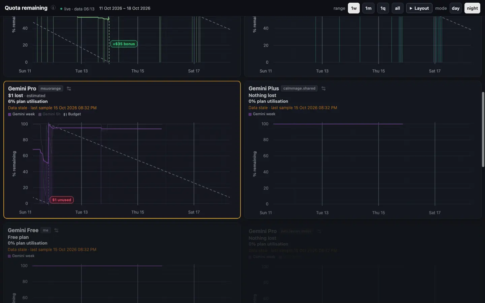
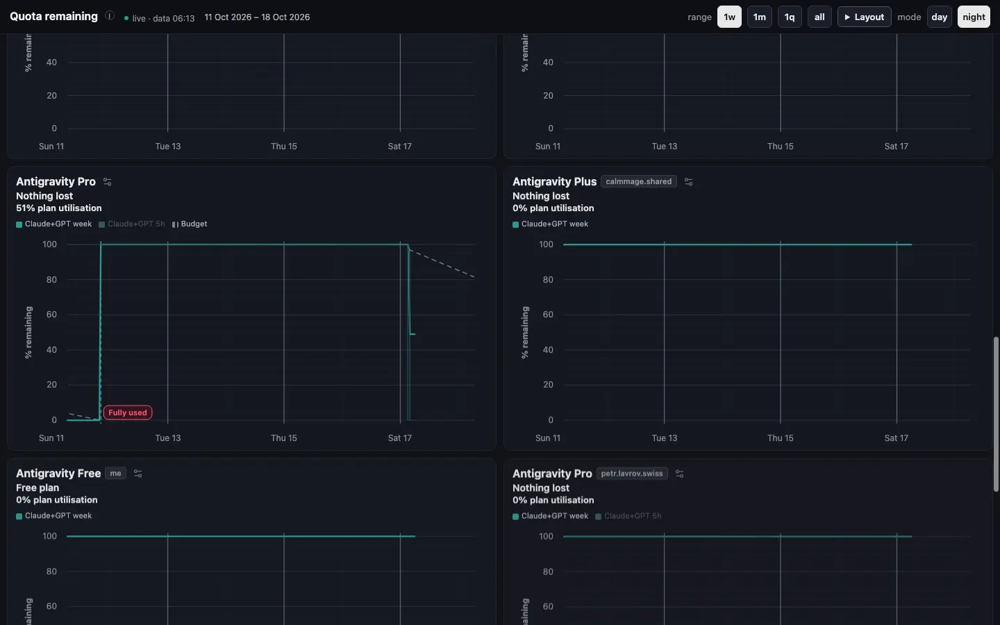
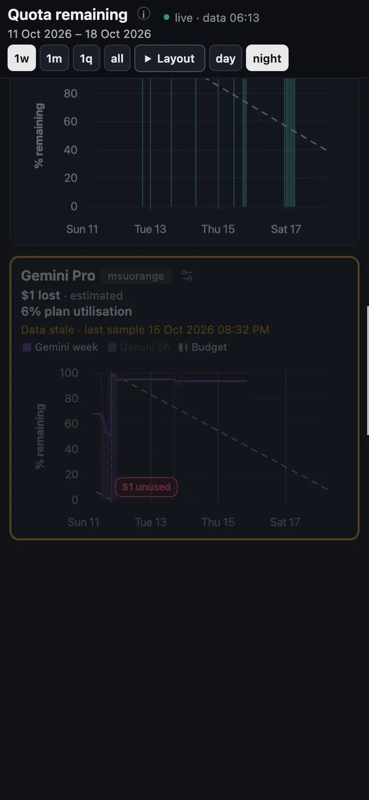
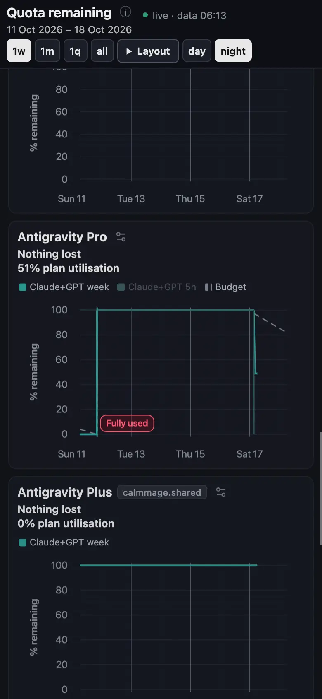
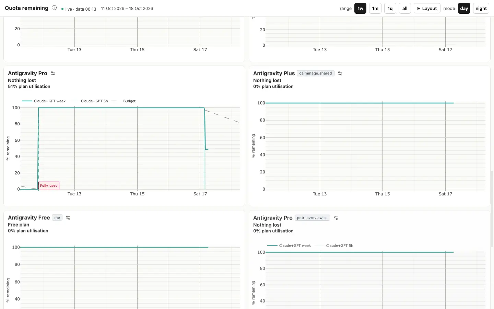
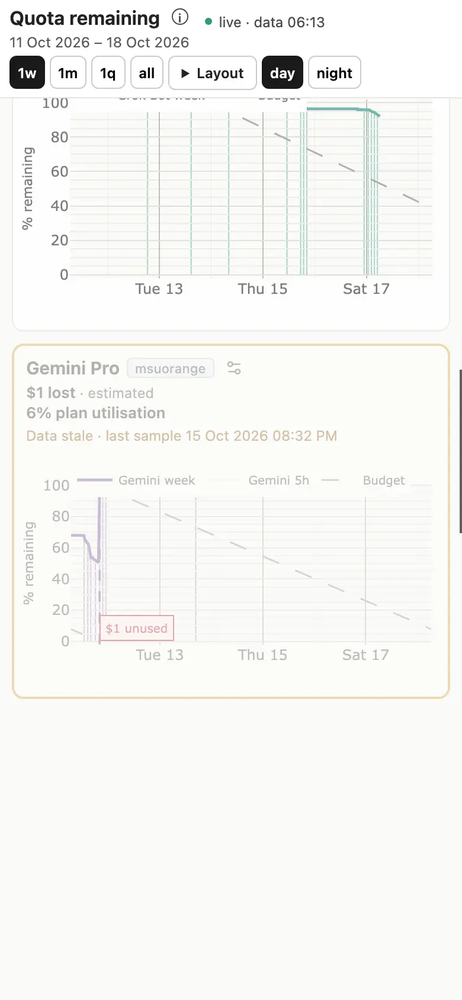

Путь по ссылке: квоты, графики с диска
Ночная доска. Gemini и Antigravity отдельными рядами. Доллар на пилюле совпадает с шапкой. Графики грузятся с этой машины.
http://127.0.0.1:8844/10_uplot/index.html
Петр открывает свою доску. Новый человек без логина видит тот же локальный файл: входа на странице нет. Цифры — его сэмплы. Antigravity снят 17 окт 2026, 06:13. Gemini последний раз 15 окт 2026, 08:32 PM. Повторно провайдеров не опрашивали.
1. Широкий экран → Gemini

Видит. Gemini Pro: «$1 lost · estimated» и «6% plan utilisation». На том же сбросе пилюля «$1 unused». Легенда «Gemini week» и «Gemini 5h». Оранжевая строка «Data stale · last sample 15 Oct 2026 08:32 PM».
Жмёт. Название. Всплывает его фраза: «why is it all for antigravity? Is antigravity and Gemini different or the same quota? I'm confused.»
- Раньше шапка говорила «$1 lost», а пилюля на том же сбросе — «$2 unused». Один план, два доллара.
- Строка stale честная: последний сэмпл Gemini старше двух часов. Её не прятали.
2. Широкий экран → Antigravity

Видит. Другой ряд. Легенда «Claude+GPT week», не «Gemini week». Antigravity Pro: «Nothing lost», «51% plan utilisation», пилюля «Fully used». Времени stale нет: данные 06:13. Antigravity Free: «Free plan», без доллара.
Жмёт. То же название. Та же его фраза во всплывающем тексте: два продукта, один вопрос.
- Было «No unused quota left» рядом с «51% plan utilisation». Линия на графике при этом около половины. Читалось как пустой бак.
- «$0 unused» на этом окне больше нет. Нулевой остаток подписан «Fully used».
3. Телефон 390 → Gemini Pro

Видит. Кнопки в одну строку: 1w, 1m, 1q, all, Layout, day, night. Карточка Gemini Pro целиком: «$1 lost», «6%», stale, пилюля «$1 unused», легенда Gemini week. Логин «msuorange» читается.
- Раньше day и night падали на вторую строку, и липкая шапка закрывала верх первого графика.
- Горизонтальной прокрутки нет. График 180 px.
4. Телефон 390 → Antigravity Pro

Видит. «Nothing lost» и «51% plan utilisation». Пилюля «Fully used». Ниже Antigravity Plus, логин «calmmage.shared» целиком, легенда «Claude+GPT week».
- Было «calmmage.s…». Полный адрес по-прежнему во всплывающем тексте чипа.
5. День, белый фон → Antigravity

Видит. Белая страница. Те же подписи: «Nothing lost», «51% plan utilisation», «Fully used», «Free plan». Оси и легенда читаются. График нарисован.
Жмёт. night в шапке. Открывается тёмная доска, тот же файл данных.
- Серый #888 на белом не проходил контраст. Сейчас подпись info посчитана как rgb(74, 74, 74).
6. Телефон, день → Gemini Pro

Видит. Снова «$1 lost» и пилюля «$1 unused». Легенда «Gemini week». Stale на месте. Кнопки в одну строку, day выбран.
Что остаётся руками
Видит. Страница ничего не запускает. Сэмплер, живой дашборд :8876 и burn не трогались.
- Пока ветку не поставят на :8876, по ссылке home человек видит старую доску.
- Gemini останется stale, пока логин сам не снимется. Сегодня его не опрашивали.
Главные трения сегодня
Снято на первой версии этой ночи. Починено в той же сборке. Кадры выше уже «стало».
- 1 Шапка «$1 lost», пилюля «$2 unused». → Пилюля берёт ту же половину плана, что и шапка. Оба говорят $1. Ноль долларов не печатается.
- 2 «No unused quota left» рядом с линией, которая ещё не пустая. → Строка потери говорит «Nothing lost». Открытое окно остаётся на строке «51% plan utilisation».
- 3 На 390 шапка в две строки и закрывает график. → Слова range и mode спрятаны, кнопки в одну строку. Высота шапки 83 px.
- 4 Логин обрезан: «calmmage.s…». → Чип шире. На экране «calmmage.shared» и «petr.lavrov.swiss». Полный адрес в подсказке.
- 5 Дневной текст #888 на белом. → Текст дня #4a4a4a. Plotly 2.35.2 и uPlot 1.6.31 лежат в vendor/, лицензия MIT рядом.
Сегодня → новый путь
| Шаг | Было | Стало |
|---|---|---|
| Gemini Pro | $1 lost и $2 unused | $1 lost и $1 unused |
| Antigravity Pro | No unused quota left · 51% | Nothing lost · 51% · Fully used |
| Free | риск «$0 lost» | Free plan, без доллара |
| Телефон | day/night второй строкой | одна строка кнопок |
| Логин | calmmage.s… | calmmage.shared |
| День | #888 на белом, график с CDN | #4a4a4a, файл с диска, 27 мс |
С тебя
Ничего сегодня ночью. Живой :8876 не обновлялся. Gemini сам не переснимался.